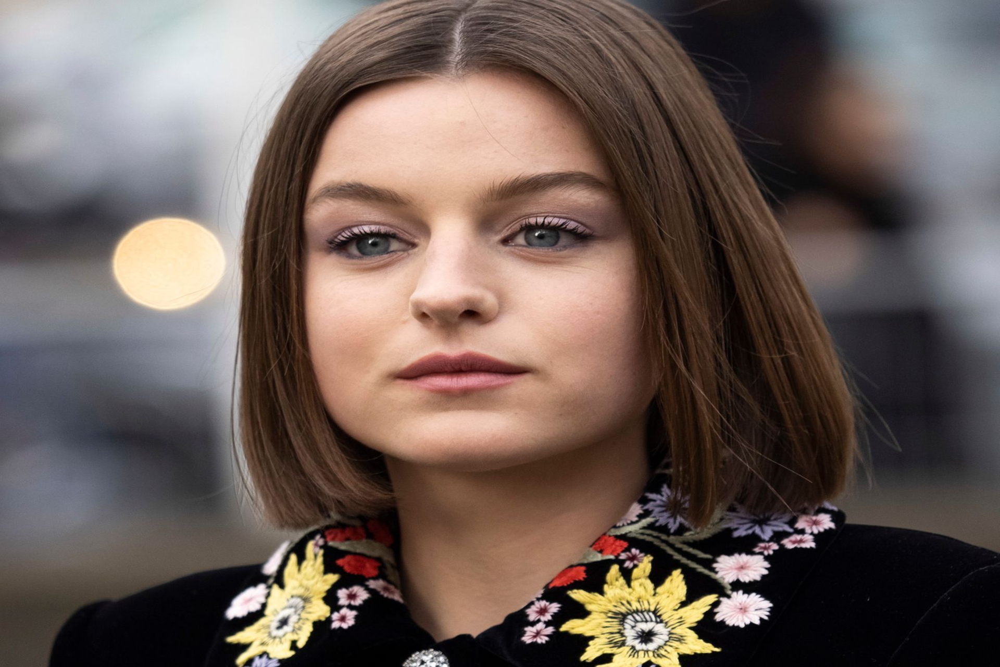

Actores y actrices
Ryan Reynolds
Personaje: Wade Wilson/Deadpool
Ryan Reynolds vuelve como el protagonista Wade Wilson. Deadpool. en esta obra y a él se une Hugh Jackman como Wolverine. Junto a ellos aparecerá Emma Corrin, como la posible villana principal de la pelicula.

Hugh Jackman
Personaje: Logan / Wolverine
Hugh Jackman vuelve a convertirse en Wolverine, el famoso personaje de los X-Men, para la tercera entrega de Deadpool

Emma Corrin
Personaje: Cassandra Nova
Emma Corrin interpreta a Cassandra Nova, la hermana gemela de Charles Xavier el Profesor X, y la villana principal de la pelicula.

Morena Bacarrin
Personaje: Vanessa
En "Deadpool y Wolverine", Morena Baccarin interpreta a Vanessa Carlysle, la novia de Wade Wilson (Deadpool), y su papel es fundamental para la narrativa emocional de la pelicula.
Ryan Reynolds vuelve como el protagonista Wade Wilson. Deadpool. en esta obra y a él se une Hugh Jackman como Wolverine. Junto a ellos aparecerá Emma Corrin, como la posible villana principal de la pelicula.
Hugh Jackman vuelve a convertirse en Wolverine, el famoso personaje de los X-Men, para la tercera entrega de Deadpool
Emma Corrin interpreta a Cassandra Nova, la hermana gemela de Charles Xavier el Profesor X, y la villana principal de la pelicula.
En "Deadpool y Wolverine", Morena Baccarin interpreta a Vanessa Carlysle, la novia de Wade Wilson (Deadpool), y su papel es fundamental para la narrativa emocional de la pelicula.